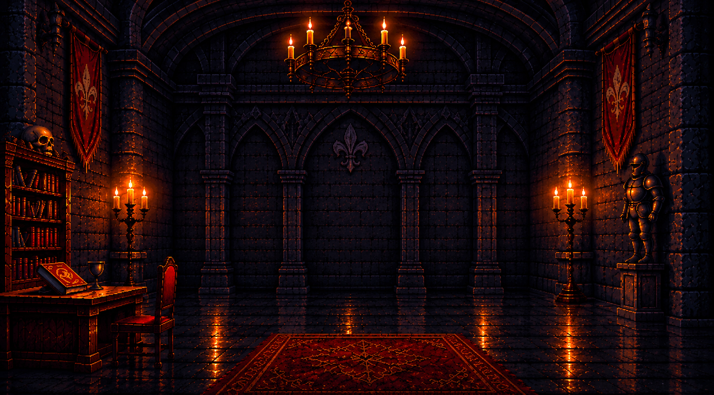
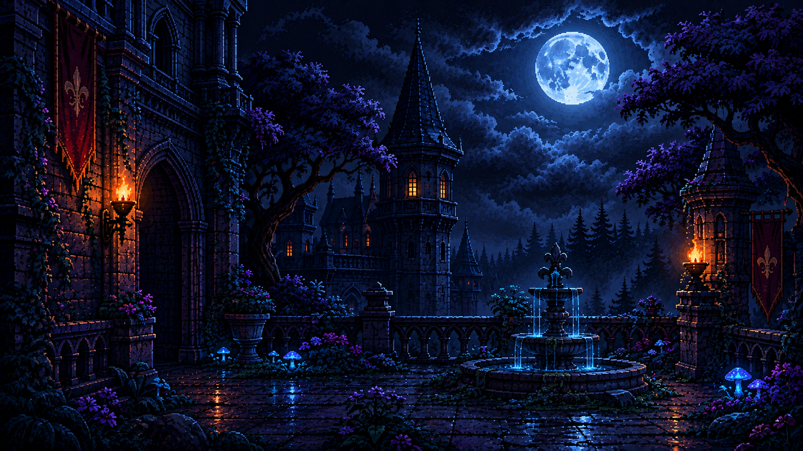
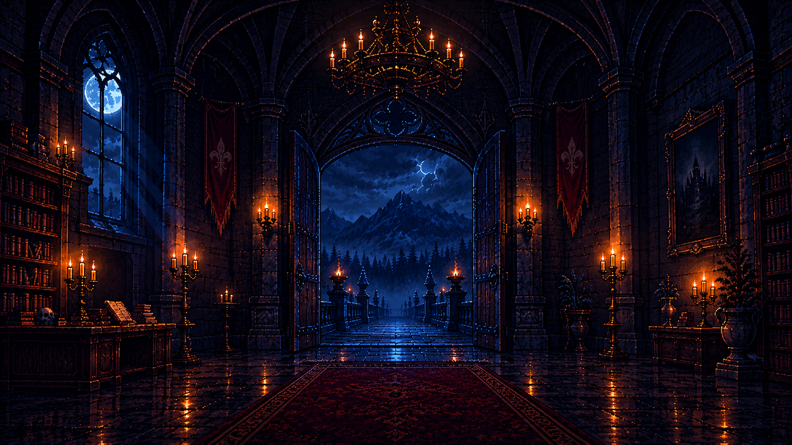
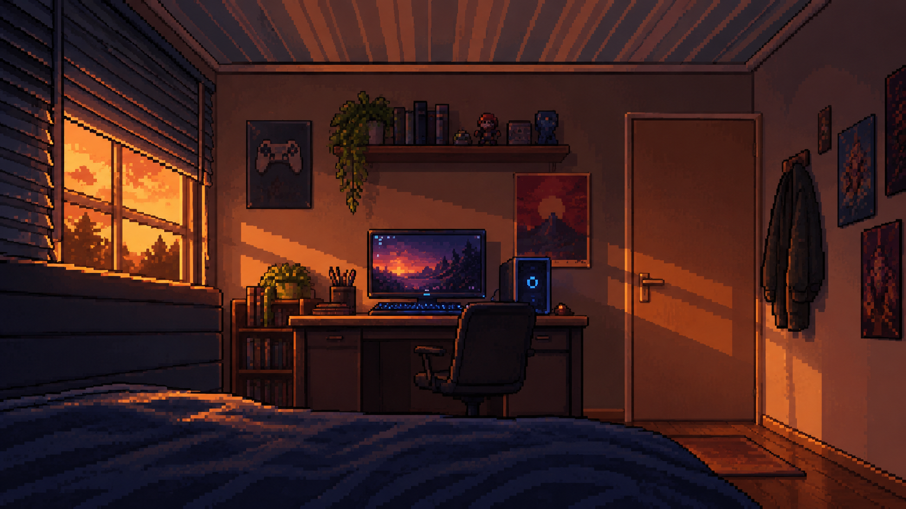
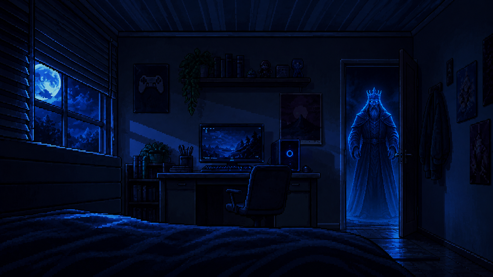

Final Bom

Iluminada pelo brilho quente dos candelabros, esta câmara silenciosa marca o ponto decisivo da sua jornada. Sobre a escrivaninha no canto esquerdo repousa um livro antigo com uma pena — o segredo oculto capaz de revelar uma verdade muito além das paredes deste castelo.

Sob o luar azulado e flores luminescentes, o jardim místico esconde um guardião de pedra. Ao dialogar com a antiga gárgula perto da fonte, você conquista um recurso vital para pôr fim à maldição deste lugar.

Avançando pelas trilhas cobertas de vegetação e sombras da noite, um novo encontro com a gárgula revela a chama necessária para completar o ritual de destruição.

Enraizada profundamente nas fundações da fortaleza, esta árvore colossal alimenta a existência sombria do castelo. Ao unir o combustível e o fogo em suas raízes, as chamas consomem toda a estrutura e libertam você deste pesadelo.

Um recipiente metálico pesado, obtido após conquistar a confiança da gárgula no jardim. Seu conteúdo inflamável é a chave para alimentar o fogo que reduzirá a fortaleza a cinzas.

Com chamas vivas que desafiam a escuridão da noite, esta tocha carrega a faísca final para incendiar as raízes da grande árvore e destruir o castelo por completo.
Final Ruim
Iluminada pelo brilho quente dos candelabros, esta câmara silenciosa marca o ponto decisivo da sua jornada. O caminho escolhido aqui selará o seu destino dentro das muralhas amaldiçoadas.

A passagem rumo à ponte de saída parece finalmente ao seu alcance sob a luz pálida da lua. Contudo, a calmaria neste salão real é apenas uma armadilha antes do despertar da guarda espectral.

Em um instante, a lua tinge-se de vermelho-sangue e o salão mergulha em uma aura azulada e aterrorizante. Os cavaleiros fantasmagóricos bloqueiam a saída, cercando você sem deixar qualquer chance de fuga.

Já atrás das grades frias da masmorra, o espectro do rei surge diante de você pela última vez. Com palavras sombrias, ele sela o portão de ferro, condenando sua alma a apodrecer na escuridão por toda a eternidade.

Com o espírito do rei desaparecido e as pesadas barras trancadas para sempre, resta apenas o silêncio úmido da cela. Sua jornada termina aqui, preso eternamente nas profundezas do castelo.
Final Secreto
Em meio aos candelabros e tapeçarias reais, o livro aberto com uma pena sobre a mesa chama sua atenção. Ao tocá-lo, sua visão começa a turvar e a realidade do castelo se desfaz diante dos seus olhos.

O terror das masmorras dá lugar ao conforto familiar do seu próprio quarto ao entardecer. A luz dourada do pôr do sol atravessa a janela, fazendo parecer que todo o castelo não passou de um longo pesadelo.

Ao tentar abrir a porta do quarto, o dia se transforma abruptamente em uma noite gélida e assustadora. Na soleira entreaberta, a figura espectral do rei observa você em silêncio — provando que o pesadelo nunca acabou.